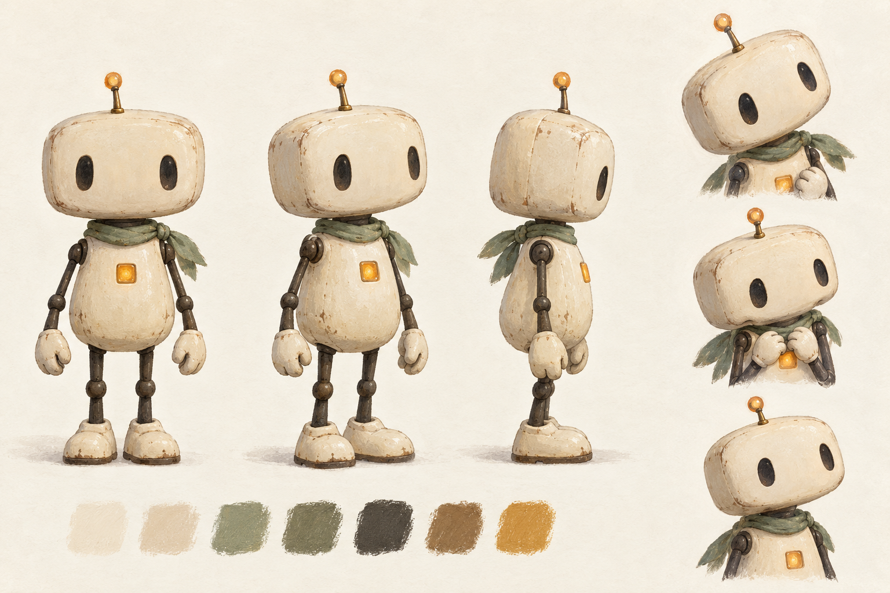

正在读取分镜……
02 / 故事赋予灵魂
“你吃饭了吗？”
一句普通的话，
对一直等待的阿灯，是一次冒险。
阿灯每晚坐在摆着两副餐具的小桌旁。右边的椅子，一直空着。
门外传来脚步声。它坐直了身子，来到门边——来人只是问路。
指完方向，看着准备离开的旅者，它的手抬起一点，又停住了。
“你吃饭了吗？”
旅者留下来。阿灯拿起备用杯，略急地擦了擦，认真招待这位终于留下的客人。
两人坐下。阿灯的肩膀，终于慢慢放松。
预留空位→误以为有人来访→犹豫着邀请→被温和回应
阿灯的第一次邀请。
一个关于主动开口的小故事
想被关心，却又害怕打扰别人。THE FINISHED STORY / 完整成片
六个镜头均为实际图生视频：先制作保持角色与场景一致的首帧，再用 Kling V3 生成动作，剪为每镜5秒。阿灯与旅者使用两种中文合成声音，四句对白配合脚步、纸张、布料和餐具声；片中已加中文字幕。
角色的迟疑由停顿、低头与伸手表达。开头的空椅与结尾的同桌构成呼应；是否产生共鸣，留给观看的人判断。
制作记录：新增五条视频共440积分，连同原S04共528积分。听脚步镜头收紧构图以排除边缘多余人影。杯子花纹、围巾和手部仍有轻微跨镜差异，保留为首版样例。
01 / 角色定制身份
这次不是更换原帖人物。
先建立一个有渴望、有弱点的原创角色。

有人自愿留下来，一起吃顿饭。
邀请会给别人添麻烦，也怕被拒绝。
替别人留一个座位，却很少开口。
从默默等待，到发出一次邀请。
设定图是第一版参考；不同视角中的围巾位置、手部结构仍需在具体镜头中逐一核对，不能只靠文字锁定。
02 / 故事赋予灵魂
一句普通的话，
对一直等待的阿灯，是一次冒险。
阿灯每晚坐在摆着两副餐具的小桌旁。右边的椅子，一直空着。
门外传来脚步声。它坐直了身子，来到门边——来人只是问路。
指完方向，看着准备离开的旅者，它的手抬起一点，又停住了。
“你吃饭了吗？”
旅者留下来。阿灯拿起备用杯，略急地擦了擦，认真招待这位终于留下的客人。
两人坐下。阿灯的肩膀，终于慢慢放松。
03 / 模型辅助故事与分镜
下列为成片的六个镜头与创作意图。
六个镜头均已生成，可直接跳转观看对应片段。
正在读取分镜……
04 / 图生视频实现动态表达

固定角色外形、站位、门与餐桌的空间关系，以及动作发生前的状态。阿灯尚未伸手，给模型留下可发生的动作。
让视线、头部、肩膀和手部随时间变化。机位固定，旅者留在画外，先检验一个角色的细微表演。
完整成片中已加入“你……吃饭了吗？”的中文配音和字幕。无嘴设计依靠动作、声线和停顿共同表达；这里保留原始单镜头供对照。
望向画外旅者，手停在胸前，保留犹豫。
微微低头，再抬起视线，像下了一个小决定。
右手缓慢张开，朝屋内作小幅邀请，然后停住。
这条测试随后扩展为上方六镜头成片。若要继续迭代，可按具体秒数标出表演或连续性偏差，优先修改最影响情绪的一项。